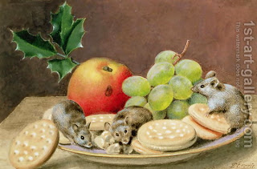

Bava Metzia 40 - Produce is Depleted
If one deposits produce with another for safekeeping, the custodian deducts the expected depletion when returning it. For wheat and rice, 2.5% is destroyed by mice and other causes over a year, for barley - 5%. The calculation should also include changes in volume due to humidity and other causes.
This ruling only applies where the custodian mixed deposited produce together with his (which he should not have done), so he can't return it as is. Additionally, he used the mixture for his purposes, and doesn't know how much he used.
For wine one deducts the absorption of the barrel and the sediment, for oil - the sediment and the scum.
Test your knowledge of the daf